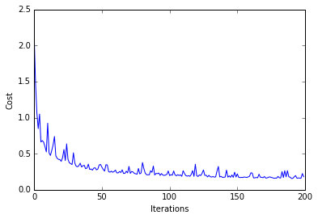

Softmax Regression
A logistic regression class for multi-class classification tasks.
from mlxtend.classifier import SoftmaxRegression
Overview
Softmax Regression (synonyms: Multinomial Logistic, Maximum Entropy Classifier, or just Multi-class Logistic Regression) is a generalization of logistic regression that we can use for multi-class classification (under the assumption that the classes are mutually exclusive). In contrast, we use the (standard) Logistic Regression model in binary classification tasks.
Below is a schematic of a Logistic Regression model, for more details, please see the LogisticRegression manual.

In Softmax Regression (SMR), we replace the sigmoid logistic function by the so-called softmax function
where we define the net input z as
(w is the weight vector,
Now, this softmax function computes the probability that this training sample

To illustrate the concept of softmax, let us walk through a concrete example. Let's assume we have a training set consisting of 4 samples from 3 different classes (0, 1, and 2)
$x_0 \rightarrow \text{class }0$ $x_1 \rightarrow \text{class }1$ $x_2 \rightarrow \text{class }2$ $x_3 \rightarrow \text{class }2$
import numpy as np
y = np.array([0, 1, 2, 2])
First, we want to encode the class labels into a format that we can more easily work with; we apply one-hot encoding:
y_enc = (np.arange(np.max(y) + 1) == y[:, None]).astype(float)
print('one-hot encoding:\n', y_enc)
one-hot encoding:
[[ 1. 0. 0.]
[ 0. 1. 0.]
[ 0. 0. 1.]
[ 0. 0. 1.]]
A sample that belongs to class 0 (the first row) has a 1 in the first cell, a sample that belongs to class 2 has a 1 in the second cell of its row, and so forth.
Next, let us define the feature matrix of our 4 training samples. Here, we assume that our dataset consists of 2 features; thus, we create a 4x2 dimensional matrix of our samples and features. Similarly, we create a 2x3 dimensional weight matrix (one row per feature and one column for each class).
X = np.array([[0.1, 0.5],
[1.1, 2.3],
[-1.1, -2.3],
[-1.5, -2.5]])
W = np.array([[0.1, 0.2, 0.3],
[0.1, 0.2, 0.3]])
bias = np.array([0.01, 0.1, 0.1])
print('Inputs X:\n', X)
print('\nWeights W:\n', W)
print('\nbias:\n', bias)
Inputs X:
[[ 0.1 0.5]
[ 1.1 2.3]
[-1.1 -2.3]
[-1.5 -2.5]]
Weights W:
[[ 0.1 0.2 0.3]
[ 0.1 0.2 0.3]]
bias:
[ 0.01 0.1 0.1 ]
To compute the net input, we multiply the 4x2 matrix feature matrix X with the 2x3 (n_features x n_classes) weight matrix W, which yields a 4x3 output matrix (n_samples x n_classes) to which we then add the bias unit:
X = np.array([[0.1, 0.5],
[1.1, 2.3],
[-1.1, -2.3],
[-1.5, -2.5]])
W = np.array([[0.1, 0.2, 0.3],
[0.1, 0.2, 0.3]])
bias = np.array([0.01, 0.1, 0.1])
print('Inputs X:\n', X)
print('\nWeights W:\n', W)
print('\nbias:\n', bias)
Inputs X:
[[ 0.1 0.5]
[ 1.1 2.3]
[-1.1 -2.3]
[-1.5 -2.5]]
Weights W:
[[ 0.1 0.2 0.3]
[ 0.1 0.2 0.3]]
bias:
[ 0.01 0.1 0.1 ]
def net_input(X, W, b):
return (X.dot(W) + b)
net_in = net_input(X, W, bias)
print('net input:\n', net_in)
net input:
[[ 0.07 0.22 0.28]
[ 0.35 0.78 1.12]
[-0.33 -0.58 -0.92]
[-0.39 -0.7 -1.1 ]]
Now, it's time to compute the softmax activation that we discussed earlier:
def softmax(z):
return (np.exp(z.T) / np.sum(np.exp(z), axis=1)).T
smax = softmax(net_in)
print('softmax:\n', smax)
softmax:
[[ 0.29450637 0.34216758 0.36332605]
[ 0.21290077 0.32728332 0.45981591]
[ 0.42860913 0.33380113 0.23758974]
[ 0.44941979 0.32962558 0.22095463]]
As we can see, the values for each sample (row) nicely sum up to 1 now. E.g., we can say that the first sample
[ 0.29450637 0.34216758 0.36332605] has a 29.45% probability to belong to class 0.
Now, in order to turn these probabilities back into class labels, we could simply take the argmax-index position of each row:
[[ 0.29450637 0.34216758 0.36332605] -> 2
[ 0.21290077 0.32728332 0.45981591] -> 2
[ 0.42860913 0.33380113 0.23758974] -> 0
[ 0.44941979 0.32962558 0.22095463]] -> 0
def to_classlabel(z):
return z.argmax(axis=1)
print('predicted class labels: ', to_classlabel(smax))
predicted class labels: [2 2 0 0]
As we can see, our predictions are terribly wrong, since the correct class labels are [0, 1, 2, 2]. Now, in order to train our logistic model (e.g., via an optimization algorithm such as gradient descent), we need to define a cost function
which is the average of all cross-entropies over our
Here the
def cross_entropy(output, y_target):
return - np.sum(np.log(output) * (y_target), axis=1)
xent = cross_entropy(smax, y_enc)
print('Cross Entropy:', xent)
Cross Entropy: [ 1.22245465 1.11692907 1.43720989 1.50979788]
def cost(output, y_target):
return np.mean(cross_entropy(output, y_target))
J_cost = cost(smax, y_enc)
print('Cost: ', J_cost)
Cost: 1.32159787159
In order to learn our softmax model -- determining the weight coefficients -- via gradient descent, we then need to compute the derivative
I don't want to walk through the tedious details here, but this cost derivative turns out to be simply:
We can then use the cost derivate to update the weights in opposite direction of the cost gradient with learning rate
for each class
(Note that
As a penalty against complexity, an approach to reduce the variance of our model and decrease the degree of overfitting by adding additional bias, we can further add a regularization term such as the L2 term with the regularization parameter
L2:
so that our cost function becomes
and we define the "regularized" weight update as
Examples
Example 1 - Gradient Descent
from mlxtend.data import iris_data
from mlxtend.evaluate import plot_decision_regions
from mlxtend.classifier import SoftmaxRegression
import matplotlib.pyplot as plt
# Loading Data
X, y = iris_data()
X = X[:, [0, 3]] # sepal length and petal width
# standardize
X[:,0] = (X[:,0] - X[:,0].mean()) / X[:,0].std()
X[:,1] = (X[:,1] - X[:,1].mean()) / X[:,1].std()
lr = SoftmaxRegression(eta=0.005, epochs=200, minibatches=1, random_seed=1)
lr.fit(X, y)
plot_decision_regions(X, y, clf=lr)
plt.title('Softmax Regression - Stochastic Gradient Descent')
plt.show()
plt.plot(range(len(lr.cost_)), lr.cost_)
plt.xlabel('Iterations')
plt.ylabel('Cost')
plt.show()


Predicting Class Labels
y_pred = lr.predict(X)
print('Last 3 Class Labels: %s' % y_pred[-3:])
Last 3 Class Labels: [2 2 2]
Predicting Class Probabilities
y_pred = lr.predict_proba(X)
print('Last 3 Class Labels:\n %s' % y_pred[-3:])
Last 3 Class Labels:
[[ 4.99921674e-06 7.23245885e-02 9.27670412e-01]
[ 2.50487208e-07 1.20047952e-02 9.87994954e-01]
[ 2.14388120e-04 2.95955727e-01 7.03829884e-01]]
Example 2 - Stochastic Gradient Descent
from mlxtend.data import iris_data
from mlxtend.evaluate import plot_decision_regions
from mlxtend.classifier import SoftmaxRegression
import matplotlib.pyplot as plt
# Loading Data
X, y = iris_data()
X = X[:, [0, 3]] # sepal length and petal width
# standardize
X[:,0] = (X[:,0] - X[:,0].mean()) / X[:,0].std()
X[:,1] = (X[:,1] - X[:,1].mean()) / X[:,1].std()
lr = SoftmaxRegression(eta=0.005, epochs=200, minibatches=len(y), random_seed=1)
lr.fit(X, y)
plot_decision_regions(X, y, clf=lr)
plt.title('Softmax Regression - Stochastic Gradient Descent')
plt.show()
plt.plot(range(len(lr.cost_)), lr.cost_)
plt.xlabel('Iterations')
plt.ylabel('Cost')
plt.show()


API
SoftmaxRegression(eta=0.01, epochs=50, l2_lambda=0.0, minibatches=1, random_seed=None, zero_init_weight=False, print_progress=0)
Logistic regression classifier.
Parameters
-
eta: float (default: 0.01)Learning rate (between 0.0 and 1.0)
-
epochs: int (default: 50)Passes over the training dataset.
-
l2_lambda: floatRegularization parameter for L2 regularization. No regularization if l2_lambda=0.0.
-
minibatches: int (default: 1)Divide the training data into k minibatches for accelerated stochastic gradient descent learning. Gradient Descent Learning if
minibatches= 1 Stochastic Gradient Descent learning ifminibatches= len(y) Minibatch learning ifminibatches> 1 -
random_seed: int (default: None)Set random state for shuffling and initializing the weights.
-
zero_init_weight: bool (default: False)If True, weights are initialized to zero instead of small random numbers following a standard normal distribution with mean=0 and stddev=1.
-
print_progress: int (default: 0)Prints progress in fitting to stderr. 0: No output 1: Epochs elapsed and cost 2: 1 plus time elapsed 3: 2 plus estimated time until completion
Attributes
-
w_: 1d-arrayWeights after fitting.
-
cost_: listList of floats with sum of squared error cost (sgd or gd) for every epoch.
Methods
fit(X, y, init_weights=True)
Learn weight coefficients from training data.
Parameters
-
X: {array-like, sparse matrix}, shape = [n_samples, n_features]Training vectors, where n_samples is the number of samples and n_features is the number of features.
-
y: array-like, shape = [n_samples]Target values.
-
init_weights: bool (default: True)(Re)initializes weights to small random floats if True.
Returns
self: object
predict(X)
Predict class labels of X.
Parameters
-
X: {array-like, sparse matrix}, shape = [n_samples, n_features]Training vectors, where n_samples is the number of samples and n_features is the number of features.
Returns
-
class_labels: array-like, shape = [n_samples]Predicted class labels.
predict_proba(X)
Predict class probabilities of X from the net input.
Parameters
-
X: {array-like, sparse matrix}, shape = [n_samples, n_features]Training vectors, where n_samples is the number of samples and n_features is the number of features.
Returns
Class probabilties: array-like, shape= [n_samples, n_classes]